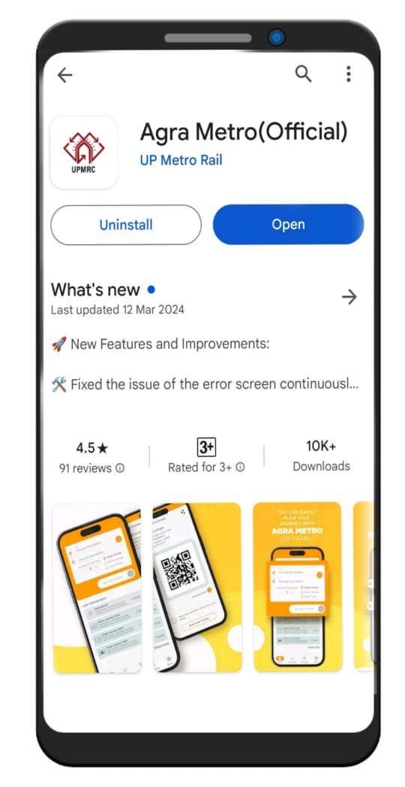
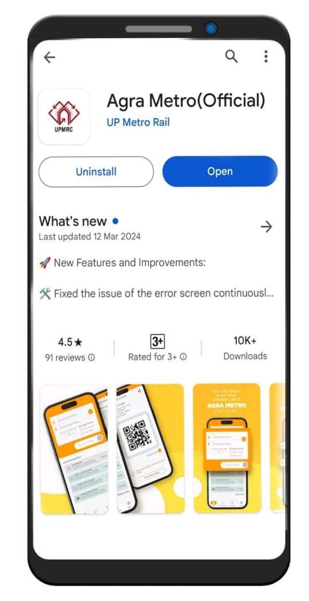

Download the official Agra Metro app for effortless travel across the city. Stay updated on train schedules, plan your journey, and access real-time route information at your fingertips. Receive instant notifications about service disruptions and changes to ensure a smooth commute. Explore detailed fare information, station amenities, and accessibility options. Whether you're a local commuter or a visitor, the Agra Metro app enhances your transit experience with its user-friendly interface and reliable features. Download now to make the most of Agra's modern metro system and enjoy convenient travel every day.
 
